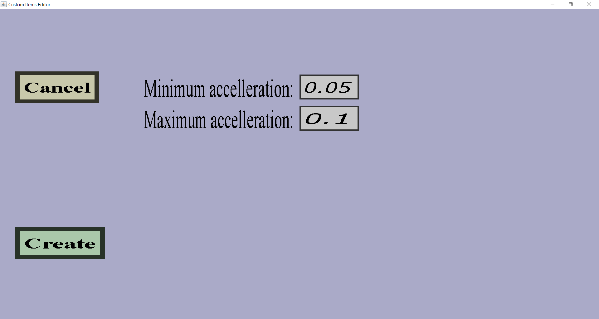

This menu can be used to add or modify a random accelleration projectile effect. These effects can be used to make projectiles move unpredictably. This effect is useless as impact effect and only useful as in-flight effect. The menu should look like this:
There should be a 'Cancel' button and an 'Apply' or 'Create' button. Also, there should be edit fields for the minimum and maximum accelleration.
The edit fields are for the minimum and maximum accelleration. To explain what the accelleration effect will do, I will first explain how the motion of the projectile works: Every flying custom projectile will have a position and a velocity. Every tick (20 times per second), the position of the projectile will be increased by its velocity. This projectile effect will change the velocity randomly each time the effect is performed. This means that the movement direction of the projectile will change each time this effect is performed and the direction in which it will change is random, so the projectile will fly very unpredictably if this effect is performed often.
Each time the effect is performed, 'the accelleration force' will be randomly chosen between the Minimum and Maximum that you wrote in the edit fields. The bigger this value, the more effect the random accelleration will have on the velocity. I think just trying values out is the easiest way to test which values are right for you.